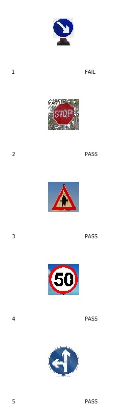

Build a Traffic Sign Recognition Project
The goals / steps of this project are the following:
You're reading it! and here is a link to my project code(#)https://github.com/kallivrousisk/Udacity-SDC-ND-P2/blob/master/Traffic_Sign_Classifier.ipynb)
I used the pandas library to calculate summary statistics of the traffic
signs data set:
# Load pickled data
import pickle
training*file = './data/train.p'
validation*file= './data/valid.p'
testing*file = './data/test.p'
with open(training*file, mode='rb') as f:
train = pickle.load(f)
with open(validation*file, mode='rb') as f:
valid = pickle.load(f)
with open(testing*file, mode='rb') as f:
test = pickle.load(f)
X*train, y*train = train, train
X*valid, y*valid = valid, valid
X*test, y*test = test, test
Here is a bar chart showing how the images are distributed.
Min number of images per class = 180
Max number of images per class = 2010
I mapped the images with the label and generated an overview.

Initially I worked with a conversion to greyscale. As the result was not satisfactory I experimented with other pre-processing methods and achieved at the end the best results with the equalize-histogram function.
import cv2
def equalize*histogram:
img*yuv = cv2.cvtColor(img, cv2.COLOR*BGR2YUV)
# equalize the histogram of the Y channel
img*yuv[:,:,0](#) = cv2.equalizeHist(img*yuv[:,:,0](#))
# convert the YUV image back to RGB format
return cv2.cvtColor(img*yuv, cv2.COLOR*YUV2BGR)
for i in range(n*train):
X*train[i](#) = equalize*histogram(X*train[i](#))
for i in range(n*validation):
X*valid[i](#) = equalize*histogram(X*valid[i](#))
for i in range(n*test):
X*test[i](#) = equalize*histogram(X*test[i](#))
I was thinking of applying the gray transfer in addition but as the results where already satisfactory I decided to use for simplicity only one function.
As last step I the image data between to improve numeric conditioning.
X*train = (X*train-128.0)/128.0
X*valid = (X*valid-128.0)/128.0
X*test = (X*test-128.0)/128.0
The resulting images looked like this:

I did not create additional data as I wanted to see if the model can perform well enough with a minimal data set.
To create additional images I would have used various distortion techniques of the initial images could have been used and the data set enlarged by that.
The difference between the original data set and the augmented data set is the following ...
I used an architecture similar to the LeNet architecture as it showed good results for image classification problems.
The bellow diagram shows the network architecture in detail.

# Layer 1: Convolutional. Input = 32x32x3. Output = 28x28x6.
with tf.name*scope('L1'):
conv1*w = tf.Variable(tf.truncated*normal(shape=(5,5,3,6), mean=mu, stddev=sigma))
conv1*b = tf.Variable(tf.zeros(6))
conv1 = tf.nn.conv2d(x, conv1*w, strides=[1,1,1,1](#), padding='VALID') + conv1*b
# Activation.
conv1 = tf.nn.relu(conv1)
# Pooling. Input = 28x28x6. Output = 14x14x6.
conv1 = tf.nn.max*pool(conv1, ksize=[1,2,2,1](#), strides=[1,2,2,1](#), padding='VALID')
# Layer 2: Convolutional. Output = 10x10x16.
with tf.name*scope('L2'):
conv2*w = tf.Variable(tf.truncated*normal(shape=(5,5,6,16), mean=mu, stddev=sigma))
conv2*b = tf.Variable(tf.zeros(16))
conv2 = tf.nn.conv2d(conv1, conv2*w, strides=[1,1,1,1](#), padding='VALID') + conv2*b
# Activation.
conv2 = tf.nn.relu(conv2)
# Pooling. Input = 10x10x16. Output = 5x5x16.
conv2 = tf.nn.max*pool(conv2, ksize=[1,2,2,1](#), strides=[1,2,2,1](#), padding='VALID')
# Flatten. Input = 5x5x16. Output = 400.
fc0 = tf.contrib.layers.flatten(conv2)
# Layer 3: Fully Connected. Input = 400. Output = 120.
with tf.name*scope('L3'):
fc1*W = tf.Variable(tf.truncated*normal(shape=(400,120), mean=mu, stddev=sigma))
fc1*b = tf.Variable(tf.zeros(120))
fc1 = tf.matmul(fc0, fc1*W) + fc1*b
# Activation.
fc1 = tf.nn.relu(fc1)
# Layer 4: Fully Connected. Input = 120. Output = 84.
with tf.name*scope('L4'):
fc2*W = tf.Variable(tf.truncated*normal(shape=(120,84), mean=mu, stddev=sigma))
fc2*b = tf.Variable(tf.zeros(84))
fc2 = tf.matmul(fc1, fc2*W) + fc2*b
# Activation.
fc2 = tf.nn.relu(fc2)
# Layer 5: Fully Connected. Input = 84. Output = 43.
with tf.name*scope('L5'):
fc3*W = tf.Variable(tf.truncated*normal(shape=(84,43), mean=mu, stddev=sigma))
fc3*b = tf.Variable(tf.zeros(43))
logits = tf.matmul(fc2, fc3*W) + fc3*b
To train the model I used the following parameters:
My final model results were:

If an iterative approach was chosen:
I used a variation of the LeNet architecture as this seemed to be well fitted for image classification problems.
I experimented first with the various methods for image pre processing to achieve an accuracy of above 90%.
I optimised then the Dropouts and input features to avoid over and underfitting.
I experimeneted with an higher number of EPOCHS but this increased processing time with no significant accuracy improvement. Accuracy increase was rather achieved by increasing the BATCHSIZE from 120 to 150
Here are five German traffic signs that I found on the web:

Here are the results of the prediction:
The model was able to correctly guess 4 of the 5 traffic signs, which gives an accuracy of 80%. Nevertheless this suggest that further variations of the signs should be used for training the model to be prepared for real-life situations.
For the first image, the model is relatively sure that this is a stop sign (probability of 0.6), and the image does contain a stop sign. The top five soft max probabilities are: